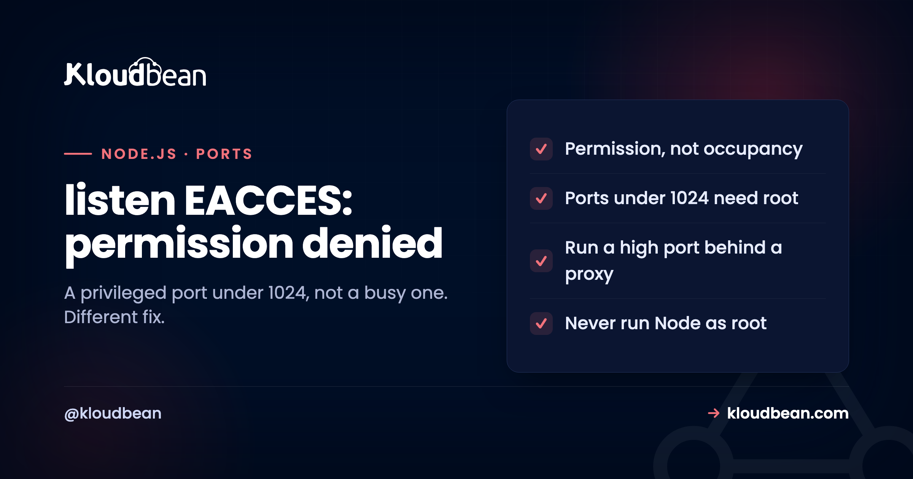

Fix: listen EACCES: permission denied in Node.js

Your Node app won't start, and the log says Error: listen EACCES: permission denied 0.0.0.0:80. It's easy to confuse this with the port-in-use error, but they're different problems with different fixes. EACCES is the operating system telling you that you asked to do something you don't have permission to do, almost always binding to a low-numbered port as a non-root user. The good news: the correct fix is also the better architecture, so solving this nudges you toward how production apps are supposed to be set up anyway.
It almost always means your app tried to bind a privileged port (below 1024, usually 80 or 443) without root permission. Don't fix it by running Node as root, that's a security risk. Instead, run your app on a high port like 3000 or 8080 and put a reverse proxy (Nginx) in front to listen on 80 and 443 and forward to it. On a managed host this is already done for you. If the port is above 1024, EACCES instead points at a file or socket permission problem, not the port.
EACCES is permission, not occupancy
The single most useful thing is to separate this from the error it looks like.
EADDRINUSE means the port is already taken by another process. EACCES means you're not allowed to use the port at all, regardless of whether anything else is on it. They read similarly in a panic, but the fixes have nothing in common, so name which one you have first. EADDRINUSE is covered in the port already in use guide. For EACCES, the operating system checked your request against its permission rules and said no. On Unix-like systems the most common trigger is trying to listen on a port below 1024, because those are privileged ports reserved for the root user. Bind port 80 as a normal user and you get exactly this error, every time, on a completely free port. Once you know it's a permission answer and not an occupancy answer, you're looking in the right place.
The usual cause: a privileged port under 1024
Here's the mechanism, because it explains most cases of this error in one paragraph.
On Linux and macOS, ports 0 through 1023 are privileged. Historically, only the root user (or a process granted a specific capability) may bind them, a rule meant to stop any random user's program from impersonating a core service like a web server on 80 or HTTPS on 443. Your Node process, running as an ordinary user (as it should), asks to listen on 80, the OS refuses, and you get listen EACCES: permission denied 0.0.0.0:80. This is not Node being difficult. Any process, in any language, hits the same wall. So the question is not "how do I force Node onto port 80," it's "what's the right way to serve traffic on 80 without running my app as root," and that has a well-worn answer.
The clean fix: high port plus a reverse proxy
This is the fix I'd reach for on any real server, and it's why the error is almost a blessing.
Run your Node app on a non-privileged port (3000, 8080, anything above 1024) where no special permission is needed, and put a reverse proxy in front of it. The proxy (Nginx, typically) listens on 80 and 443, terminates SSL, and forwards requests to your app on its high port. Your application never needs elevated privileges, the proxy handles the public-facing ports, and you also get TLS termination, compression, and a place to serve static files, all for free. This is the standard production shape for a Node app, and the Nginx reverse proxy guide walks it end to end. If your instinct was to get Node onto port 80 directly, this is the better instinct to replace it with: apps bind high ports, proxies own the low ones.
Whether you build that shape yourself depends on where the app lives. On a bare VPS it's your vhost, your proxy_pass block, and your certificate renewal. On a managed Node server it's the default arrangement: on Kloudbean the app runs under PM2 as a non-root user on its own port while the web server in front holds 80 and 443 with free auto-renewing SSL, and the port your app listens on is a setting rather than a config file you edit over SSH. Either way, the architecture is the same. The difference is who writes it.
What not to do: run Node as root
There's a fix that works and that you should not use, so let me be direct about it.
You can make the error vanish by running your Node process as root (or with sudo), because root is allowed to bind privileged ports. Don't. Running an internet-facing application as root means that if the app is ever compromised, the attacker has root on your server, not just your app's limited user. You've turned a contained problem into a total one. The privileged-port rule exists precisely to discourage this, and stepping around it with root is defeating a safety feature. If you genuinely need the app itself to bind port 80 without a proxy (rare, but it happens in some container setups), the least-bad option is granting just that one capability with setcap 'cap_net_bind_service=+ep' $(which node), which permits low-port binding without full root. But in almost every case, the reverse proxy is cleaner and you should use it instead.
This is mostly a discipline problem, and discipline erodes at 1am. The reason a managed setup helps is not that root is forbidden, it's that the app is already running as its own user with the proxy already in place, so there's no moment where sudo node server.js looks like the fastest way out. Fail2ban and the host firewall are on by default on a Kloudbean server too, which limits the noise but does nothing about a process you deliberately gave root. That part is on you, on any platform.
When the port is above 1024
If your EACCES is not about a low port, here's the other branch, so you're not misled.
Getting EACCES on a high port (say 3000) means the cause is not the privileged-port rule. Look instead at a file or socket permission issue: your app might be trying to bind a Unix domain socket in a directory it can't write to, or a previous run left a socket file owned by another user, or a security policy (SELinux, AppArmor) is blocking the bind. Check who owns the socket file or directory and whether your app's user can write there, remove a stale socket left by a crashed process, and confirm no mandatory-access-control policy is intervening. The error text is the same word, "permission denied," but on a high port it's pointing at the filesystem or a security module, not at the reserved-port rule, so that's where to look.
None of that branch is a hosting question. A socket path your app user can't write to is your deploy's ownership problem wherever it runs, and no platform can guess which directory you meant. Run ls -l on the socket path before you change anything else.
Which EACCES is yours, and which belongs to the layer underneath
Everything above sorts into two piles, and knowing which pile you're in saves the wasted half hour. Here's the split.
| What actually produced it | Whose fix | What to do |
|---|---|---|
| Port 80 or 443 hard-coded in your code | Your code | Read process.env.PORT with a high-port default |
PORT never set in production, so a fallback of 80 kicks in | Your config | Set the variable where the app runs, not in your shell |
App started with sudo to make the error stop | Your call, and it's the wrong one | Undo it, run as an ordinary user, proxy the low ports |
| Unix socket in a directory the app user can't write | Your deploy | Fix ownership on the socket directory |
| Stale socket file left by a crashed process | Your process management | Remove it on start, or let a supervisor handle restarts |
| No proxy in front, so the app is expected to hold 80 | The server layer | Nginx on 80 and 443 forwarding to your high port |
| SELinux or AppArmor refusing the bind | The server layer | Adjust the policy, or ask whoever runs the box |
The bottom two rows are the ones people outsource, and on Kloudbean they're already settled: the proxy, the certificate, and the OS policy come with a managed Node server, and the app runs as a non-root user on the port you choose in the console. That's the part of this error a hosting decision genuinely removes.
The top five rows no host can touch, ours included. If server.js says app.listen(80), it will fail on every managed platform on earth, and it should. That single line is worth fixing properly, because the same habit is what makes an app awkward to run locally, in CI, in a container, and behind any proxy at all:
// not this
app.listen(80);
// this
const port = process.env.PORT || 3000;
app.listen(port, () => console.log(`listening on ${port}`));For where to run Node in production, see the managed Node.js hosting guide.
Worth a look afterwards
The lookalike error is EADDRINUSE, port already in use, which is occupancy rather than permission. The clean fix here is an Nginx reverse proxy for Node. If the app won't start for another reason, why my Node app crashes on deploy and ECONNREFUSED cover the neighbours, and the managed Node.js hosting guide covers where to run it.
Fewer mysteries on the next deploy.
Deploy from Git, watch the build output as it runs, and open the app error log when a process refuses to start. Managed processes restart on crash, and backups are automatic.
- ✓ Live build logs
- ✓ Deployment history
- ✓ Logs viewer
- ✓ Managed process restarts
- ✓ Automatic backups
- ✓ Git deploy
FAQ
What does listen EACCES permission denied mean in Node?
It means the operating system refused your app permission to bind the port it requested, most often because the port is below 1024 and your process is not running as root. Privileged ports like 80 and 443 are reserved for the root user on Unix-like systems, so an ordinary user's process is denied. It is a permission refusal, distinct from EADDRINUSE, which means the port is already occupied.
How do I fix EACCES on port 80 or 443?
Run your Node app on a non-privileged port such as 3000 or 8080, and put a reverse proxy like Nginx in front to listen on 80 and 443 and forward to your app. This avoids the privileged-port restriction without elevating your app's privileges, and it gives you SSL termination too. On a managed host this proxy setup already exists, so the error does not occur.
Should I just run Node as root to fix it?
No. Running an internet-facing app as root means a compromise of the app becomes a compromise of the whole server, which is a serious security risk. The privileged-port rule exists to discourage exactly this. Use a reverse proxy on the low ports instead, or if the app must bind a low port directly, grant only the specific capability with setcap rather than running the whole process as root.
What is the difference between EACCES and EADDRINUSE?
EACCES means you are not permitted to bind the port, typically a privileged port below 1024 without root. EADDRINUSE means the port is already in use by another process. They look similar but have unrelated fixes: EACCES is solved by using a high port behind a proxy or granting a capability, while EADDRINUSE is solved by finding and stopping the process already on the port, or choosing a different port.
Why do I get EACCES on a high port like 3000?
Above 1024 the privileged-port rule does not apply, so EACCES there points at a different cause: usually a file or socket permission problem. Your app may be trying to create a Unix domain socket in a directory it cannot write to, a stale socket file may be owned by another user, or a security module like SELinux or AppArmor may be blocking the bind. Check ownership and permissions on the socket path and any mandatory-access-control policy.
What does setcap cap_net_bind_service do?
It grants a specific Linux capability that lets a program bind privileged ports below 1024 without being root. Running setcap 'cap_net_bind_service=+ep' on the Node binary allows low-port binding while avoiding full root privileges. It is the least-bad option when an app truly must bind a low port directly, but a reverse proxy on the low ports is usually cleaner and is the more common production choice.
Does this error happen on managed hosting?
Usually not, because a managed platform runs your app as a non-root user on a high port and puts a web server in front to handle ports 80 and 443 and SSL. That is the recommended pattern applied by default, so the privileged-port version of EACCES, which is the common one, does not arise. You would only see EACCES from a file or socket permission issue inside your own application code.
Is EACCES a bug in Node?
No. It is the operating system enforcing its permission rules, and any program in any language that tried the same bind would get the same refusal. Node is simply reporting what the OS returned. That is why the fix is architectural, use a high port behind a proxy, rather than a Node setting, and why running as root is the wrong lever even though it makes the message disappear.